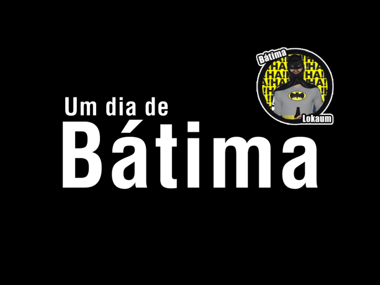
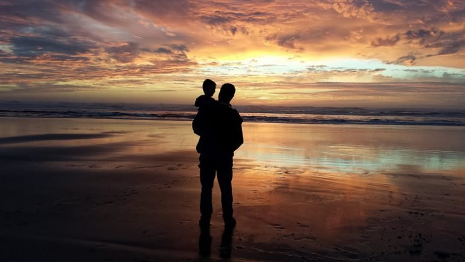
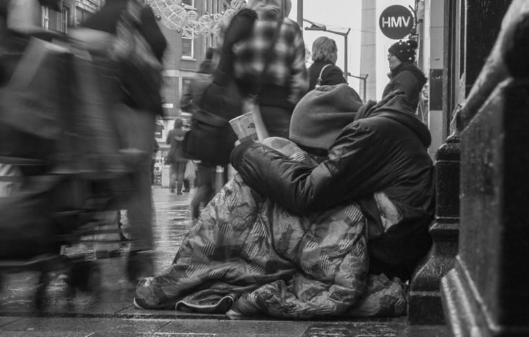
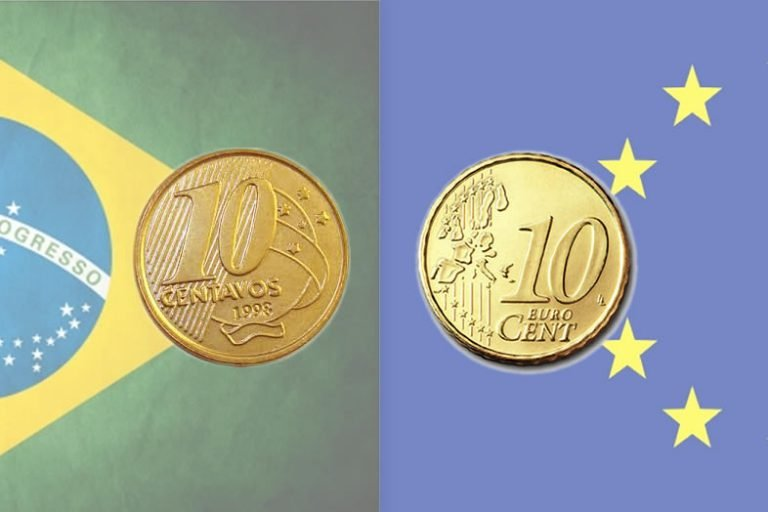
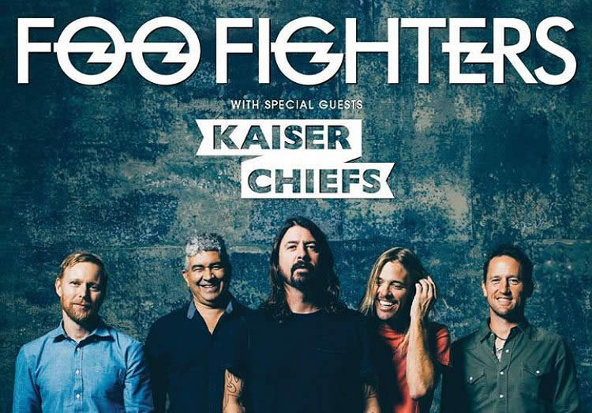
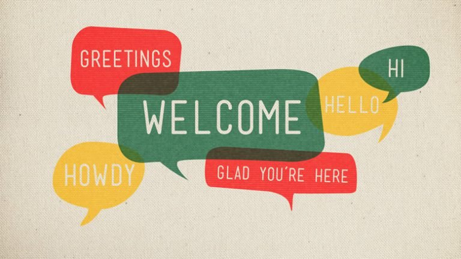

Conceito 5 · Índice: o portal como o sumário de um livro
← todos os conceitos
Sumário
I
Vida
Quem é mineiro me entende
2019
Psicólogo é só para doidos
2018
Um dia de bátima
2017

O desapego, o amor e os ciclos da vida
2015
Feliz dia dos Pais
2015

Sawabona Shikoba
2015
Parabéns mães!
2015
Mulheres
2015
II
Mundo afora
O que te impede de aprender outro idioma?
2016
Suporte aos desabrigados na Irlanda
2015

O dia bonito longe do equador
2015
O Mercadinho Brasileiro e os 10 Centavos
2015

O Slane Castle e o Rock and Roll
2015

O Início dos Sonhos
2015
III
Crescer
Um turbo para metas pessoais
2021
Mas me conta, como vocês dois se conheceram?
2018
O Preço da Mídia Gratuita
2018
Invictus: O poema que inspirou Nelson Mandela
2017
As pequenas grandes hipóteses do dia a dia
2017
Aumentando sua auto-confiança em apenas 2 minutos
2016
Inspiração de Vida e Empreendedora
2016
Welcome Back
2016

Liderança em um minuto
2015
IV
Apps
Nome do app
app
Outro app
app
Mais um app
app
V
Sobre o autor
Quem é o Gui
sobre
Receber os próximos capítulos por e-mail
✉️